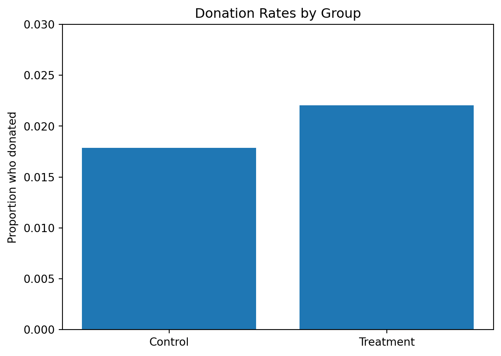
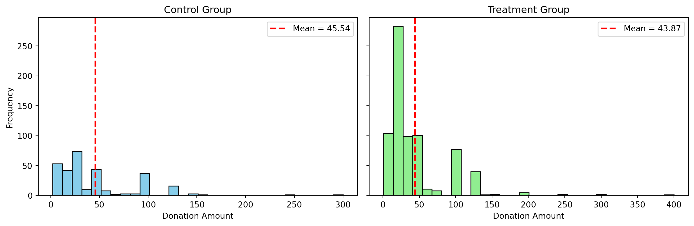
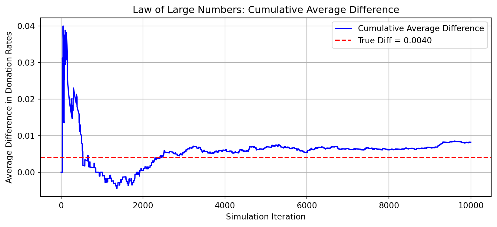
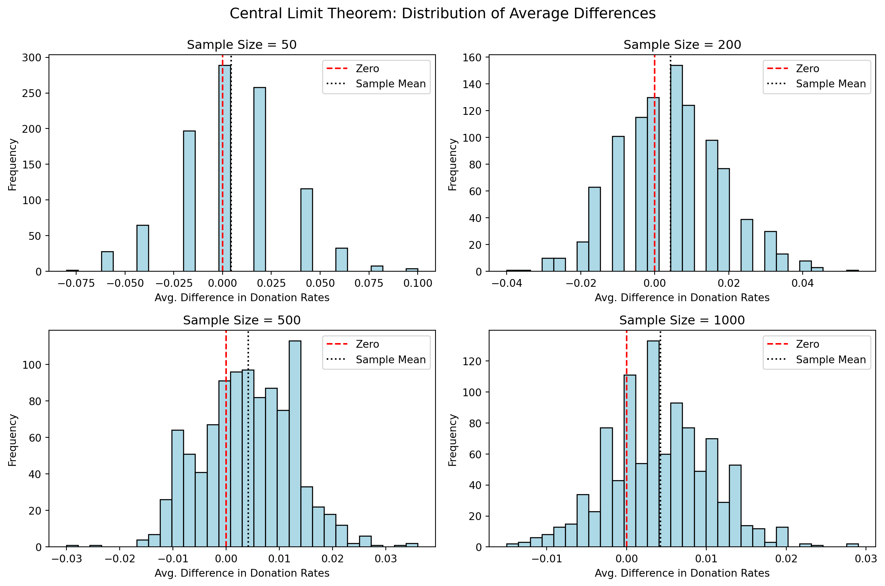

Dean Karlan at Yale and John List at the University of Chicago conducted a field experiment to test the effectiveness of different fundraising letters. They sent out 50,000 fundraising letters to potential donors, randomly assigning each letter to one of three treatments: a standard letter, a matching grant letter, or a challenge grant letter. They published the results of this experiment in the American Economic Review in 2007. The article and supporting data are available from the AEA website and from Innovations for Poverty Action as part of Harvard’s Dataverse.
In this study, the researchers tested whether offering a matching grant (where a donor pledges to match contributions) could increase charitable giving. The experiment involved sending over 50,000 direct mail solicitations to previous donors of a liberal nonprofit organization. Individuals were randomly assigned to either a control group or to one of several treatment groups. The treatment letters announced that a “concerned fellow member” would match their donation at varying ratios: 1:1, 2:1, or 3:1, with caps on the total matched amount. Additionally, letters varied in the suggested donation amount and the stated match ceiling ($25,000, $50,000, $100,000, or not mentioned). This design allowed the authors to isolate the effects of price, messaging, and donor context on charitable behavior.
This project seeks to replicate their results.
Data
Description
We use the dataset karlan_list_2007.dta, which contains 50,083 observations, each corresponding to a past donor who received one of several types of fundraising letters. The dataset is provided in Stata (.dta) format and can be read into Python using the pandas library:
import pandas as pd# Load the Stata datadf = pd.read_stata("karlan_list_2007.dta")# Preview the datadf.head()
treatment
control
ratio
ratio2
ratio3
size
size25
size50
size100
sizeno
...
redcty
bluecty
pwhite
pblack
page18_39
ave_hh_sz
median_hhincome
powner
psch_atlstba
pop_propurban
0
0
1
Control
0
0
Control
0
0
0
0
...
0.0
1.0
0.446493
0.527769
0.317591
2.10
28517.0
0.499807
0.324528
1.0
1
0
1
Control
0
0
Control
0
0
0
0
...
1.0
0.0
NaN
NaN
NaN
NaN
NaN
NaN
NaN
NaN
2
1
0
1
0
0
$100,000
0
0
1
0
...
0.0
1.0
0.935706
0.011948
0.276128
2.48
51175.0
0.721941
0.192668
1.0
3
1
0
1
0
0
Unstated
0
0
0
1
...
1.0
0.0
0.888331
0.010760
0.279412
2.65
79269.0
0.920431
0.412142
1.0
4
1
0
1
0
0
$50,000
0
1
0
0
...
0.0
1.0
0.759014
0.127421
0.442389
1.85
40908.0
0.416072
0.439965
1.0
5 rows × 51 columns
Variable Definitions
Variable
Description
treatment
Treatment
control
Control
ratio
Match ratio
ratio2
2:1 match ratio
ratio3
3:1 match ratio
size
Match threshold
size25
$25,000 match threshold
size50
$50,000 match threshold
size100
$100,000 match threshold
sizeno
Unstated match threshold
ask
Suggested donation amount
askd1
Suggested donation was highest previous contribution
askd2
Suggested donation was 1.25 x highest previous contribution
askd3
Suggested donation was 1.50 x highest previous contribution
ask1
Highest previous contribution (for suggestion)
ask2
1.25 x highest previous contribution (for suggestion)
ask3
1.50 x highest previous contribution (for suggestion)
amount
Dollars given
gave
Gave anything
amountchange
Change in amount given
hpa
Highest previous contribution
ltmedmra
Small prior donor: last gift was less than median $35
freq
Number of prior donations
years
Number of years since initial donation
year5
At least 5 years since initial donation
mrm2
Number of months since last donation
dormant
Already donated in 2005
female
Female
couple
Couple
state50one
State tag: 1 for one observation of each of 50 states; 0 otherwise
nonlit
Nonlitigation
cases
Court cases from state in 2004-5 in which organization was involved
statecnt
Percent of sample from state
stateresponse
Proportion of sample from the state who gave
stateresponset
Proportion of treated sample from the state who gave
stateresponsec
Proportion of control sample from the state who gave
stateresponsetminc
stateresponset - stateresponsec
perbush
State vote share for Bush
close25
State vote share for Bush between 47.5% and 52.5%
red0
Red state
blue0
Blue state
redcty
Red county
bluecty
Blue county
pwhite
Proportion white within zip code
pblack
Proportion black within zip code
page18_39
Proportion age 18-39 within zip code
ave_hh_sz
Average household size within zip code
median_hhincome
Median household income within zip code
powner
Proportion house owner within zip code
psch_atlstba
Proportion who finished college within zip code
pop_propurban
Proportion of population urban within zip code
The dataset includes information about:
Treatment conditions: such as the match ratio (ratio, ratio2, ratio3), match cap (size25, size50, size100), and suggested donation (askd1, askd2, askd3).
Donation outcomes: including whether the individual donated (gave) and how much (amount).
Donor history: such as the number of past donations (freq), years since first donation (years), and highest previous contribution (hpa).
Demographics & geography: gender (female), political environment (red0, blue0), and zip-code-level demographics like income and education.
This rich structure allows us to explore how matching grants and suggested donation levels affect giving behavior.
Balance Test
As an ad hoc test of the randomization mechanism, I provide a series of tests that compare aspects of the treatment and control groups to assess whether they are statistically significantly different from one another.
To test whether several pre-treatment characteristics differ significantly between the treatment and control groups, I used both manual t-tests and linear regressions, where each variable was regressed on the treatment assignment.
In all cases, the p-values are above 0.05, indicating that we fail to reject the null hypothesis of equal means between treatment and control groups. The results from the manual t-tests and regression models are nearly identical, as expected.
This confirms that random assignment was successful — the treatment and control groups are statistically balanced on observed characteristics. These results mirror Table 1 in Karlan & List (2007), where the treatment and control groups show nearly identical averages across key baseline variables. This similarity supports the idea that the randomization worked as intended, meaning any differences in outcomes we observe later can more confidently be attributed to the treatment, not to pre-existing differences between the groups.
Experimental Results
Charitable Contribution Made
First, I analyze whether matched donations lead to an increased response rate of making a donation.
I compare donation rates between the treatment and control groups. The plot below shows that 2.2% of individuals in the treatment group donated, compared to 1.8% in the control group. This visual difference suggests a potential treatment effect.
import matplotlib.pyplot as pltdonation_rates = df.groupby("treatment")["gave"].mean()donation_rates.index = ["Control", "Treatment"]plt.bar(donation_rates.index, donation_rates.values)plt.ylabel("Proportion who donated")plt.title("Donation Rates by Group")plt.ylim(0, 0.03)plt.show()

Then, to test whether offering a matching donation increases the likelihood that someone donates, I compare the donation behavior between the treatment and control groups using both a t-test and a bivariate linear regression.
# Linear regressionmodel_lin = smf.ols("gave ~ treatment", data=df).fit()# print(model_lin.summary())
Regression Output Summary:
Variable
Coefficient
Std. Error
t-value
p-value
95% CI
Intercept
0.0179
0.001
16.225
0.000
[0.016, 0.020]
Treatment
0.0042
0.001
3.101
0.002
[0.002, 0.007]
The t-test reveals a statistically significant difference in donation rates: the treatment group is more likely to give than the control group. This finding is confirmed by the regression, where the treatment coefficient is positive and significant, indicating that receiving a letter with a matching offer caused an increase in donations.
These results align closely with Table 2A, Panel A from Karlan & List (2007), which shows a response rate of 1.8% for the control group and 2.2% for the treatment group. The increase may seem small in absolute terms, but it is meaningful given the scale of the experiment and is statistically distinguishable from zero.
So, what does this tell us about human behavior? People are more likely to act generously when they feel their contribution is amplified. The idea that a matching donor will “double” or “triple” their impact likely makes the donation feel more meaningful. Even if the match ratio is relatively small, this added sense of social proof, urgency, or amplified impact nudges people to take action. In short, while most people didn’t give, those who were offered a matching donation were noticeably more likely to say yes. This demonstrates how small design changes in fundraising campaigns can have meaningful effects on human behavior.
To further analyze the effect of being offered a matching donation on the likelihood of giving, I estimate a probit regression, where the outcome variable is whether a charitable donation is made (gave), and the explanatory variable is treatment assignment.
Optimization terminated successfully.
Current function value: 0.100443
Iterations 7
Regression Output Summary:
Variable
Coefficient
Std. Error
z-value
p-value
95% CI
Intercept
−2.1001
0.023
−90.073
0.000
[−2.146, −2.054]
Treatment
0.0868
0.028
3.113
0.002
[0.032, 0.141]
This result is statistically significant at the 1% level, and the sign and magnitude match closely with Table 3, Column 1 in the paper, where the authors report a coefficient of 0.086 with a standard error of 0.028.
Although probit coefficients aren’t directly interpretable in terms of probability changes, the positive and significant result indicates that being in the treatment group increases the probability of donating.
This confirms what we see in the t-test and linear regression: offering a match increases donations, even when using a model tailored for binary outcomes.
Differences between Match Rates
Next, I assess the effectiveness of different sizes of matched donations on the response rate.
To investigate whether larger match ratios (e.g., 2:1 or 3:1) encourage more people to donate than the 1:1 match, I run a series of t-tests comparing donation rates among the different match groups (all within the treatment group).
The results are clear: there is no statistically significant differences in response rates between the 1:1, 2:1, and 3:1 match ratios. All t-statistics are approximately 0.965, and all p-values are around 0.335, well above conventional significance thresholds.
These results replicate the authors’ conclusion in the paper (see page 8), where they write: “…we do not find systematic patterns for the interaction effects.”
In other words, while offering a match increases donation rates (compared to no match), increasing the match ratio beyond 1:1 does not meaningfully boost donations further.
To complement the t-tests, I also run a regression on the subsample of individuals who received a matching donation. The goal is to estimate how donation likelihood varies across different match ratios: 1:1 (baseline), 2:1, and 3:1. I use an OLS regression where the dependent variable is gave, and the explanatory variables are indicator variables for the match ratios (ratio2, ratio3). The 1:1 match group serves as the reference category.
# Run regression with 1:1 as baseline (ratio1 is omitted)model = smf.ols("gave ~ ratio2 + ratio3", data=treat_group).fit()#print(model.summary())
Regression Output Summary:
Variable
Coefficient
Std. Error
t-value
p-value
95% CI
Intercept
0.0207
0.001
14.912
0.000
[0.018, 0.023]
ratio2 (2:1)
0.0019
0.002
0.958
0.338
[−0.002, 0.006]
ratio3 (3:1)
0.0020
0.002
1.008
0.313
[−0.002, 0.006]
This regression confirms the earlier t-test results: neither a 2:1 nor a 3:1 match rate leeds to a statistically significant increase in giving compared to a 1:1 match. The coefficients are small (~0.002) and not statistically significant (p > 0.3). This suggests that offering a match matters more than the size of the match. Larger match offers (e.g., 3:1) do not appear to yield meaningful gains over a simple 1:1 offer.
To further assess whether larger match ratios led to more donations, I calculate the difference in donation rates between:
2:1 vs 1:1
3:1 vs 2:1
3:1 vs 1:1
From the treatment group, I compute the mean of gave for each match ratio group:
Raw response rates by match ratio
# Create match ratio group labelsdef get_ratio(row):if row["ratio2"] ==1:return"2:1"elif row["ratio3"] ==1:return"3:1"else:return"1:1"# Safely add the new columntreat_group.loc[:, "ratio_group"] = treat_group.apply(get_ratio, axis=1)# Calculate mean donation rate by groupdonation_rates = treat_group.groupby("ratio_group")["gave"].mean()
/tmp/ipykernel_2892/2459960996.py:11: SettingWithCopyWarning:
A value is trying to be set on a copy of a slice from a DataFrame.
Try using .loc[row_indexer,col_indexer] = value instead
See the caveats in the documentation: https://pandas.pydata.org/pandas-docs/stable/user_guide/indexing.html#returning-a-view-versus-a-copy
print("Raw Donation Rates by Match Ratio:\n", donation_rates)
Raw Donation Rates by Match Ratio:
ratio_group
1:1 0.020749
2:1 0.022633
3:1 0.022733
Name: gave, dtype: float64
So:
2:1 − 1:1 = 0.19 percentage points
3:1 − 1:1 = 0.20 percentage points
3:1 − 2:1 = 0.01 percentage points
These differences are very small.
Also, from the regression output, the coefficients for ratio2 and ratio3 are 0.0019 and 0.0020, respectively. These values again show that the 2:1 match group donated ~0.19 percentage points more than the 1:1 group; the 3:1 match group donated ~0.20 points more than the 1:1 group; and the difference between 3:1 and 2:1 is basically zero (0.0020 − 0.0019 = 0.0001).
Both the raw means and the regression results tell the same story: increasing the match ratio from 1:1 to 2:1 or 3:1 leads to slightly higher donation rates, but the increases are small and not statistically significant.
Size of Charitable Contribution
In this subsection, I analyze the effect of the size of matched donation on the size of the charitable contribution.
First, to analyze whether the treatment (being offered a matching donation) influenced not just whether someone gave, but how much they gave, I conduct a t-test and a bivariate linear regression on the full sample (including individuals who gave $0).
print(f"T-test: t = {t_stat:.3f}, p = {p_val:.4f}")#print(model_all.summary())
T-test: t = 1.918, p = 0.0551
Regression Output Summary:
Variable
Coefficient
Std. Error
t-value
p-value
95% CI
Intercept
0.8133
0.067
12.063
0.000
[0.681, 0.945]
Treatment
0.1536
0.083
1.861
0.063
[−0.008, 0.315]
The t-test returns a t-statistic of 1.918 with a p-value of 0.0551, and the linear regression produces a treatment coefficient of 0.1536 (p = 0.063). These values are not statistically significant at the 5% level, but they are marginally close.
This analysis suggests that on average, individuals in the treatment group gave slightly more than those in the control group. However, this difference is not strong enough to conclude that the treatment definitively increased average donation size.
Importantly, since the majority of individuals donated $0, this result primarily reflects differences in the likelihood of giving, not in the size of donations among actual donors. In other words, what we’re seeing is likely driven by extensive margin behavior — more people gave — rather than people giving more.
To truly assess whether the treatment affected the size of donations, we need to focus on those who actually gave, which is what we’ll do next.
To isolate the effect of the treatment on the amount donated, I restricted the analysis to only those individuals who actually gave. This lets us explore whether the matching offer not only encouraged more people to give, but also led them to give more money once they decided to donate.
I ran a t-test and a linear regression of amount on treatment, using this restricted sample of donors.
Compare donation amounts filtering only donors
# Filter only donors (those who gave a positive amount)donors = df[df["gave"] ==1]# Compare mean donation amounts between treatment & control among donorstreated_donors = donors[donors["treatment"] ==1]["amount"]control_donors = donors[donors["treatment"] ==0]["amount"]t_stat, p_val = ttest_ind(treated_donors, control_donors, equal_var=False)# Run regression: amount ~ treatmentmodel_donors = smf.ols("amount ~ treatment", data=donors).fit()
print(f"T-test (donors only): t = {t_stat:.3f}, p = {p_val:.4f}")#print(model_donors.summary())
T-test (donors only): t = -0.585, p = 0.5590
Regression Output Summary:
Variable
Coefficient
Std. Error
t-value
p-value
95% CI
Intercept
45.5403
2.423
18.792
0.000
[40.785, 50.296]
Treatment
−1.6684
2.872
−0.581
0.561
[−7.305, 3.968]
These results indicate that, among donors, those who received the match offer actually gave slightly less than those in the control group, though the difference is not statistically significant.
This analysis suggests that the match offer was effective at getting more people to donate, but it did not increase the size of donations among those who were already willing to give. If anything, the point estimate implies the opposite, but the evidence is not strong enough to draw a firm conclusion.
In other words, the treatment worked on the extensive margin (getting more people to give), but not on the intensive margin (getting donors to give more).
The treatment coefficient doesn’t exactly have a causal interpretation, because, while the original experiment involved random assignment, this analysis conditions on a post-treatment variable (gave == 1), which may itself have been influenced by the treatment. This introduces selection bias, because the people who chose to give in each group may differ systematically.
As a result, the treatment coefficient here is descriptive (it tells us how much donors gave in each group) but it does not provide a valid causal estimate of how treatment affected donation size.
Finally, to visualize how donation amounts differed between groups, I created two histograms (one for the treatment group and one for the control group) including only individuals who actually made a donation. A red vertical dashed line in each plot represents the average donation amount for that group.
import matplotlib.pyplot as plt# Subset only those who donateddonors = df[df["gave"] ==1]# Split by treatmenttreatment_donors = donors[donors["treatment"] ==1]["amount"]control_donors = donors[donors["treatment"] ==0]["amount"]# Compute meansmean_treat = treatment_donors.mean()mean_control = control_donors.mean()# Plot histogramsfig, axes = plt.subplots(1, 2, figsize=(12, 4), sharey=True)# Control group plotaxes[0].hist(control_donors, bins=30, color='skyblue', edgecolor='black')axes[0].axvline(mean_control, color='red', linestyle='dashed', linewidth=2, label=f"Mean = {mean_control:.2f}")axes[0].set_title("Control Group")axes[0].set_xlabel("Donation Amount")axes[0].set_ylabel("Frequency")axes[0].legend()# Treatment group plotaxes[1].hist(treatment_donors, bins=30, color='lightgreen', edgecolor='black')axes[1].axvline(mean_treat, color='red', linestyle='dashed', linewidth=2, label=f"Mean = {mean_treat:.2f}")axes[1].set_title("Treatment Group")axes[1].set_xlabel("Donation Amount")axes[1].legend()plt.tight_layout()plt.show()

Observations from the Plot
The distribution shapes are fairly similar across both groups: most donations fall below $100, with a few outliers in the $200–$400 range.
The average donation in the control group was $45.54, while the average in the treatment group was $43.87.
Despite offering a matching donation, the treatment group did not donate more on average. In fact, they gave slightly less (though not significantly).
These findings match what we saw in the regression and t-test: while the treatment increased the likelihood of giving, it did not lead to larger donations among those who gave.
Simulation Experiment
As a reminder of how the t-statistic “works,” in this section I use simulation to demonstrate the Law of Large Numbers and the Central Limit Theorem.
Suppose the true distribution of respondents who do not get a charitable donation match is Bernoulli with probability p=0.018 that a donation is made.
Further suppose that the true distribution of respondents who do get a charitable donation match of any size is Bernoulli with probability p=0.022 that a donation is made.
Law of Large Numbers
To illustrate the Law of Large Numbers, I simulate donation behavior for two groups:
Control group: Bernoulli trials with probability p=0.018 (1.8% chance of donating)
Treatment group: Bernoulli trials with probability p=0.022 (2.2% chance of donating)
At each iteration, I simulate one draw from each distribution and record the difference (treatment − control). I repeat this 10,000 times, then plotted the cumulative average of these differences across iterations. The red dashed line in the plot shows the true difference in donation probabilities: True difference=0.022−0.018=0.004
import numpy as npimport matplotlib.pyplot as plt# Set seed for reproducibilitynp.random.seed(42)# Simulation parametersn =10000p_control =0.018p_treatment =0.022# Simulate donations (1 = gave, 0 = didn't)control_draws = np.random.binomial(1, p_control, n)treatment_draws = np.random.binomial(1, p_treatment, n)# Compute stepwise differences in donation outcomesdiffs = treatment_draws - control_draws# Cumulative average of differencescumulative_avg_diff = np.cumsum(diffs) / np.arange(1, n+1)# Plotplt.figure(figsize=(10, 4))plt.plot(cumulative_avg_diff, label='Cumulative Average Difference', color='blue')plt.axhline(p_treatment - p_control, color='red', linestyle='dashed', label=f"True Diff = {p_treatment - p_control:.004f}")plt.title("Law of Large Numbers: Cumulative Average Difference")plt.xlabel("Simulation Iteration")plt.ylabel("Average Difference in Donation Rates")plt.legend()plt.grid(True)plt.show()

In this plot we can see taht, initially, the cumulative average fluctuates heavily (the early estimates are noisy due to small sample sizes). But as the number of simulated draws increases, the average converges toward the true value, stabilizing close to 0.004.
This is a classic visual demonstration of the Law of Large Numbers, which tells us that, as the number of observations grows, the sample mean converges to the population mean.
Central Limit Theorem
To visualize the Central Limit Theorem, I simulate the average difference in donation rates between treatment and control groups using four different sample sizes: 50, 200, 500, and 1000. For each sample size, I draw samples of size n from Bernoulli distributions with a probabilities p=0.018 and p=0.022, for the control group and treatment group respectively. Then, I compute the difference in sample means between the groups, and I repeat this process 1000 times, generating 1000 average differences for each sample size. I then plot a histogram of those 1000 differences.
import numpy as npimport matplotlib.pyplot as plt# Set seednp.random.seed(42)# Parametersp_control =0.018p_treatment =0.022sample_sizes = [50, 200, 500, 1000]num_simulations =1000# Create subplotsfig, axes = plt.subplots(2, 2, figsize=(12, 8))axes = axes.flatten()for i, n inenumerate(sample_sizes): avg_diffs = []for _ inrange(num_simulations): control_sample = np.random.binomial(1, p_control, n) treatment_sample = np.random.binomial(1, p_treatment, n) diff = treatment_sample.mean() - control_sample.mean() avg_diffs.append(diff)# Plot histogram axes[i].hist(avg_diffs, bins=30, color='lightblue', edgecolor='black') axes[i].axvline(x=0, color='red', linestyle='dashed', label='Zero') axes[i].axvline(x=np.mean(avg_diffs), color='black', linestyle='dotted', label='Sample Mean') axes[i].set_title(f"Sample Size = {n}") axes[i].set_xlabel("Avg. Difference in Donation Rates") axes[i].set_ylabel("Frequency") axes[i].legend()plt.suptitle("Central Limit Theorem: Distribution of Average Differences", fontsize=14)plt.tight_layout()plt.subplots_adjust(top=0.9)plt.show()

What the Plots Show
Sample Size = 50: The distribution is wide and somewhat irregular. It includes zero near the center, suggesting that with small samples, random noise can easily obscure the true effect.
Sample Size = 200: The distribution becomes narrower and more symmetric. The average difference starts to center around the true difference (~0.004).
Sample Size = 500: The shape becomes more bell-like, and zero begins to move toward the edge of the distribution.
Sample Size = 1000: The distribution is clearly approximately normal and tightly concentrated around the true average difference. Zero is now well into the tail, indicating that it’s increasingly unlikely the observed difference is due to chance.
This simulation confirms the Central Limit Theorem in practice: As sample size increases, the distribution of the sample mean becomes approximately normal, regardless of the underlying distribution, and its standard error decreases.
In the context of the donation experiment, it shows that with small samples, detecting a small effect like a 0.4 percentage point increase is hard and noisy. But as the sample size grows, the signal becomes more visible, and zero becomes a less likely explanation for the difference.
This reinforces the value of large samples in experiments, since they provide more precise, reliable estimates of treatment effects.